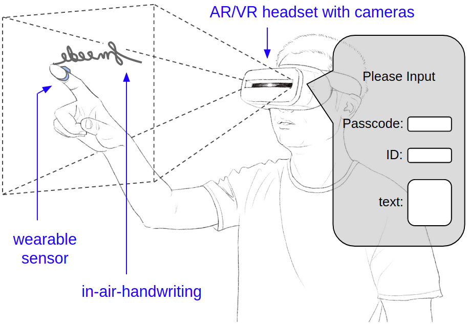
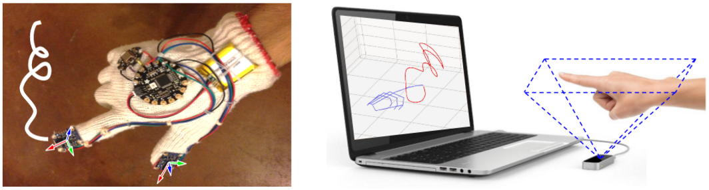
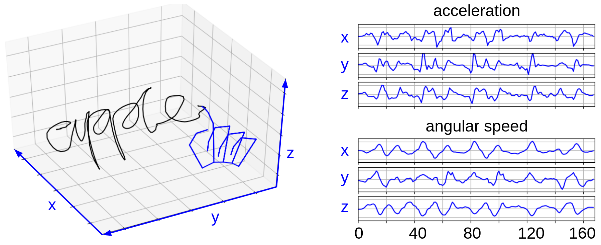
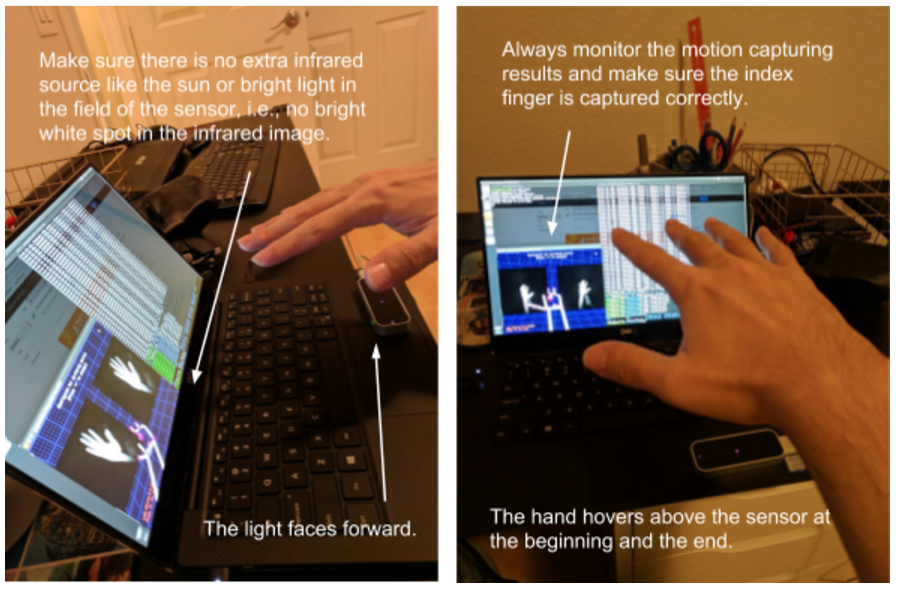

The FMKit Architecture
Hand-gesture and in-air-handwriting provide ways for users to input information in Augmented Reality (AR) and Virtual Reality (VR) applications where a physical keyboard or a touch screen is unavailable. However, understanding the movement of hands and fingers is challenging, which requires a large amount of data and data-driven models. In this project, we propose an open research infrastructure named FMKit for in-air-handwriting analysis, which contains a set of Python libraries and a data repository collected from more than 180 users using two different types of motion capture sensors. We also present three research tasks enabled by FMKit, including in-air-handwriting based user authentication, user identification, and word recognition, with preliminary baseline performance.
Introduction
In AR/VR applications, 3D in-air hand gestures are natural ways to interact with virtual objects as well as a method to input information [3, 9, 10, 14]. Besides simple gestures like tap, scroll, slide, etc, there are cases when complicated information such as text or identity is needed to be presented to the software as input. Consider the scenario shown in Figure 1, a dialog pops up to an AR/VR user asking a passcode, an ID, or a short piece of text information (e.g., a tweet) as input information. One possible method is using in-air-handwriting [4, 15], i.e., instead of typing, the user can write a piece of information in the air, and ask the computer to recognize it. However, there are a few challenges. First, recognizing patterns in hand motion generally requires a large amount of data to train machine learning models, but the data collection is generally expensive. Second, there is no standard hand motion capture device and data collection procedures, and existing works choose their own ways, which makes the datasets incompatible and hard to compare. Additionally, most of them are not openly available. Third, given different motion capture devices and multiple in-air-handwriting related tasks solved using various algorithms, these mix-and-matches make it difficult to fairly evaluate different systems and compare their performance results [2]. To the best of our knowledge, the only open datasets of in-air-handwriting are constructed for word recognition [11, 4] using the Leap Motion controller.

Figure 1: In-air-handwriting as input to AR/VR applications.
In this project, we construct FMKit (Finger Motion analysis Kit), an open-source library and open datasets for in-air-handwriting analysis. Currently, FMKit contains several datasets of in-air-handwriting motion for various purposes. There are 103K data signals in total. Especially, each dataset has two parts collected in identical scenarios with the same in-air-handwriting content using two different motion capture devices, so that the results of the two devices can be compared. We also release the details of the devices, signal characterization, data collection protocols, and the source code of the client software so that researchers can easily extend our datasets. Meanwhile, we propose three types of research tasks enabled by the FMKit infrastructure: user authentication [1, 12, 13, 6, 8], user identification [5, 7], and in-air-handwriting word recognition [4, 15], which corresponds to the three types of inputs in Figure 1. Additionally, we provide the baseline performance for these tasks with our dataset. We hope this open infrastructure helps researchers to validate models, benchmark the performance of algorithms, and further facilitate data-driven approaches that can be generalized across sensor types for in-air-handwriting analysis.
Devices
The FMKit data repository contains multiple datasets, all collected using two types of devices (shown in Figure 2): a wearable device (a custom-made data glove with inertial sensors) and a contactless 3D camera (the Leap Motion controller).
The Leap Motion controller can capture the 3D position of each joint of the hand at about 110 Hz with an 135 degree Field of View (FOV) and a depth range of 60 cm. Usually only the tip of the index finger or the palm center is interested. However, we discover that the tracking results of fingers are not always reliable, especially when the hand moves quickly or when the index finger points to certain directions (occluded by the palm from the perspective of the camera.
The data glove can track the 3D acceleration and angular speed of the tip of the index finger at 100 Hz, using a Micro-Electro-Mechanical System (MEMS) Inertial Measurement Unit (IMU). Specifically, we use the Bosch BNO055 IMU. The glove also has an identical IMU on the thumb but that sensor is generally not used. The data glove has a few variants with slight differences in form factors, microcontrollers, and IMU orientations. However, the essential motion sensors and the obtained signals are the same. Both devices are relatively inexpensive (roughly $100) and their capabilities are similar to existing VR/AR platforms with a gesture user interface with similar sensors for hand motion capture.

Figure 2: The custom data glove device (left) and the Leap Motion controller (right).
In-Air-Handwriting Signal
The basic unit of data in our datasets is called a "signal", which is a recorded piece of hand movement of writing a string in the air. Examples of raw signals are shown in Figure 3.

Figure 3: The left figure shows an example of the finger motion trajectory of writing "apple" together with the hand skeleton captured by the Leap Motion controller. The right figure shows an example of the signal containing the acceleration and the angular speed obtained from the data glove when writing the same word "apple" by the same person. These signals are the "raw signals" directly from the device.
The Python module "fmsignal.py" is constructed to model the signal obtain from sensor devices. It also has those routines for preprocessing. Also, the Python module "fmsignal_vis.py" is built to facilitate the inspection and visualization of signals. Additionally, the Python module "fmsignal_demo.py" contains code for demonstrating the usage of the code library. Also see the "User Manual - Signal".
There are essentially four types of signals:
- Raw signal from the Leap Motion device, represented by the "FMSignalLeap" class.
- Raw signal from the data glove device, represented by the "FMSignalGlove" class.
- Preprocessed signal from the Leap Motion device, represented by the "FMSignal" class.
- Preprocessed signal from the data glove device, also represented by the "FMSignal" class.
Note that the "FMSignal" class is actually device agnostic. All preprocessed signals have the same format.
These four types of signals share a lot in common, and we collectively call them "signals". A signal is created by a user writing some content. Sometimes the user writes the same content in multiple repetitions to generate a set of signals. Hence, a signal object in any of the four types has a "user" attribute to indicate the writer, a "cid" (i.e., content ID) attribute to indicate the content, and a "seq" attribute to indicate one of the repetitions in a set (if it is just a standalone signal, "seq" is simply zero).
A signal is a time series containing samples of physical states of the fingers. The time series is denoted as a two dimensional array s = ( s1, s2, ..., si, ..., sl ), and each sample (or row) of s is si = ( si1, si2, ..., sij, ..., sid ). Here "l" is the number of samples and "d" is the number of sensor axes, i.e., the first dimension is the time, and the second dimension is the sensor axes. Depending on the type of signals, the meaning of each element (or column) sij is different. For a preprocessed signal, it has 18 sensor axes (i.e., "d" is 18), as follows.
- 0 - 2: position in x-y-z.
- 3 - 5: velocity in x-y-z.
- 6 - 8: linear acceleration in x-y-z (i.e., the gravity "g" is removed).
- 9 - 11: orientation (currently, it is the qx, qy, qz components of a unit quaternion).
- 12 - 14: angular speed in x-y-z.
- 15 - 17: angular acceleration in x-y-z.
Note that the "FMSignal" class is actually device agnostic, and hence, preprocessed signals all have these 18 sensor axes regardless of the motion capture devices. It represents the motion state of a single point on the hand, either the tip of the index finger or the center of the hand (which can be chosen at the preprocessing procedure). This two dimensional array is represented by the "data" attribute of the "FMSignal" class. It is a NumPy ndarray object. The "dtype" is always "np.float32".
For raw signals, the sensor axes are specific to the device, which is more complicated. However, the only thing needs to be done for the raw signal is the preprocessing so as to obtain a preprocessed signal. The preprocessing contains the following steps.
- Down-sampling the signal to 50 Hz with linear interpolation on each sensor axis.
- Normalizing the signal reference frame,i.e., set the average position as the origin, the average hand pointingdirection as the x-axis, and the horizontal left as the y-axis.
- For each signal sample, deriving the 18 axes mentioned above from the raw sensor data.
- Low-pass filtering with a threshold frequency of 10 Hz.
- Trimming the start and end of the signal when the hand does not move.
- (Optional) Normalizing the whole signal in each sensor axis to zero mean and unit variance.
- (Optional) Normalizing thesignal length to 256 samples with linear interpolation.
The last two steps of preprocessing are usually only needed for specific tasks.
The samples of a signal are generated at a constant rate and each sample si is associated with a timestamp "tsi". All signals created by the same user writing the same content can construct a set S = { s(1), s(2), ..., s(k) }, where "k" is essentially the "seq" attribute of a signal. Given such a set S, a template t can be generated by aligning all signals in S to the first signal and average all the algigned signals. The template is represented by the "FMSignalTemplate" class. A template has the same attributes as an ordinary signal. The aligning process is typically done through Dynamic Time Warping (DTW), which is also widely used for signal comparison and authentication tasks.
Datasets
Currently, the following datasets are available.
(1) ID-passcode: We asked each user to create two distinct meaningful strings as an ID string and a passcode. The content of the string is determined by the user. Such a string may include alphanumeric letters, characters in a language other than English, or meaningful symbols such as five-pointed stars. Once the strings are created, we ask the user to write each string in-the-air for 5 repetitions as registration and another 5 repetitions as login attempts, using each device. This simulates the normal sign-up and sign-in procedure. In total, there are 360 (strings) * 10 (repetitions) * 2 (devices) = 7,200 signals.
In this dataset, the content of the string is determined by the user. We strongly recommend the users avoid using the ID or password they use in their daily lives, but we did not forbid the users to write their name as ID strings because most of the in-air-handwriting are illegible like a signature and the content is hard to read. 58 users wrote words in Chinese for both strings. The remaining 122 users wrote alphanumerical strings. We asked each user to create a unique ID string so that all 180 ID strings have unique contents. However, there are no such constraints for the passcodes. Surprisingly, all 180 passcode strings also have unique contents. In fact, there is only one ID string that has the same content as another passcode. They are created by different users, who both choose the string "helloworld" but for different purposes. As a general guideline, we discourage simple strings for passcode such as "123456", and we recommend that the length of an alphanumerical string be at least eight characters. However, it is not a strict restriction, and a few users still created simple and short strings like "USA" or "abc123". Many users chose a combination of letters and numbers like a traditional password typed on a keyboard, e.g., "stevenC909", or meaningful phrases, \textit{e.g.}, "PondLakeOcean", while some users chose a combination without an obvious meaning, e.g., "sqwz1457", and one user drew three five-pointed stars as a passcode. For privacy reasons, the contents of the ID and passcode are not disclosed.
(2) ID-passcode-collision: We asked 10 skilled imposters to imitate the in-air-handwriting of the ID and passcode generated by the users in the "ID-passcode" dataset. In this setting, the imposters know the semantic meaning of the strings written by the legitimate users, but the imposters have not seen the legitimate users writing the ID and passcode in the air, which simulates the case of ID or passcode collision, or spoofing attack with semantic leakage. For each string in the "ID-passcode" dataset, we ask each imposter to write it with 5 repetitions using each device. In total, there are 360 (strings) * 10 (imposters) * 5 (repetitions) * 2 (devices) = 36,000 signals.
(3) ID-passcode-spoofing: Similar to the "ID-passcode-collision" dataset, we asked 10 skilled imposters to imitate the in-air-handwriting of the ID and passcode generated by the users in the "ID-passcode" dataset. In this setting, the imposters can watch the recorded video of the in-air-handwriting and they will be informed with the semantic meaning of the in-air-handwriting. There are 180 string in the "ID-passcode" dataset where the user allows us to record a video of the hand movement (exactly 90 ID strings and 90 passcodes corresponding to 90 users). For each of the 180 strings, we ask each imposter to write it with 5 repetitions using each device. In total, there are 360 (strings) * 10 (imposters) * 5 (repetitions) * 2 (devices) = 18,000 signals.
(4) ID-passcode-persistence: We kept collecting the sign-in in-air-handwriting of a subset of the users in the "ID-passcode" dataset for a period of about 4 weeks, which simulates login activity in the long term. In that dataset, the user wrote each string 5 repetitions as registration, while in this dataset, besides the registration, the users wrote the strings for the account ID and the account passcode 5 repetitions in a day as a session. There are 10 sessions in total and the data of each session is collected in a different day. 40 users participated in this dataset. In total there are 80 (strings) * 10 (imposters) * 5 (repetitions) * 2 (devices) = 8,000 data samples.
(5) word-210: We asked 10 users to write 210 English words and another 10 users to write 210 Chinese words, with 5 repetitions for each word using both devices. The user is asked to write in a legible way. In total, there are 2 (languages) * 210 (strings) * 10 (writers) * 5 (repetitions) * 2 (devices) = 42,000 data samples.
(6) Usability Survey: We asked the participating users to fill a survey on the usability of gesture sign-in system with various sensors and different types of gestures. 100 users responded to the survey.
Besides, we are currently working on an extension of the "word-210" dataset, named word-10k. As the name suggests, this dataset contains 10,000 English words and 10,000 Chinese words, where each English word is written by at least 10 different users with one repetition and each Chinese word is written by at least 10 different users with one repetition. In total, there will be at least 400,000 signals. It is currently work-in-progress and this dataset construction is supposed to be finished by the end of year 2021.
Currently, the "word-210" dataset is openly available here. If you would like to use other datasets related to in-air-handwriting of ID and passcode, please send an email application to us (see the "Authors" section in the home page).
Data Collection Protocols
The detailed procedure for the Leap Motion controller device is shown in Figure 4. The data collection is done on several identical Linux desktop and Linux laptop machines. On each machine, three Linux console terminals are opened, one for the Leap Motion daemon process (i.e., typing "sudo leapd" in the commandline), one for the Leap Motion control panel as well as the visualizer (typing "LeapControlPanel --showsettings" and then launch the "diagnose visualizer"), and the last for the actual data collection program (typing "python ./client_leap.py xxx.txt" in the commandline or launch the client program with a GUI). At the beginning of the writing of one string, the participant typically hover the hand above the sensor, like that in the following figure. Once the data collection starts, i.e., immediately after the "client_leap.py" script executes or the "start/stop" button on the GUI client is clicked, the hand starts to move. At the end of the writing of one string, the hand restores to the initial position or stop at the last stroke. The data collection program can be stopped by the user, i.e., press the "space" key or clicking the "start/stop" button (typically for the "word-210" dataset), or it can automatically stop if the user's hand stops moving for roughly 1 second (typically for the datasets related to ID string and passcode). The participant can write from left to right or just write every letter at the same place.

Figure 4: Data collection procedure for the Leap Motion controller device.
The procedure for the data glove is similar. Only one Linux console terminal is needed for the actual data collection program. Different from the Leap Motion controller where the user must write within the field of view of the sensor, the data glove does not have such constraints. The user can just start moving after the data collection program starts to collect data. When the user finishes writing, the data collection program can be stopped in the same way as that for the Leap Motion controller.
Each captured handwriting signal is an individually named file. In the "ID-passcode" dataset, for the ID string, it is typically "id_id_xx.csv", where "xx" the sequence number of the repetition. For example, if the ID string is "alice", the file is named as "alice_alice_0.csv" for the first repetition. For the passcode, similarly, it is "id_passcode_xx.csv". For example, if the ID string is "alice" and the passcode is "FMKit", the file name is "alice_FMKit_0.csv". If the user chooses to write in Chinese, pinyin is used in the file name to indicate the content. To protect the privacy, We removed any tags and metadata that is sensitive to user identity. Files storing the data are renamed to something like "user0_user0_0.csv" for an ID string and "user0_passcode0_0.csv" for a passcode. In this way, we can immediately know which user generates which signal for what content from the file name while debugging the code and tuning trained models.
For the ""ID-passcode-collision" datset and the "ID-passcode-spoofing" dataset, the procedure of spoofing with semantic leakage is similar to the "sign-in" step in the "ID-passcode" dataset, i.e., only five repetitions for each string. The file name is in the format of "collision_string_xx.csv" or "spoof_string_xx.csv". For example, if the imposter is designated to be "spoof8", and the spoofed string is "FMKit", the file name is "spoof8_FMKit_0.csv" for the first repetition. To facilitate dataset loading and saving, an alternative naming scheme with a slight different difference is also used. It also follows the format "collision_string_xx.csv" or "spoof_string_xx.csv". All imposters are just designated simply as "collision" or "spoof". However, "spoof_string_0.csv" to "spoof_string_4.csv" are the five repetitions for the first imposter, "spoof_string_5.csv" to "spoof_string_9.csv" are the five repetitions for the second imposter, and so on. For the same privacy reasons, the "string" part in the file name are renamed to something like "user0" or "passcode0".
For the long-term persistence study dataset, the procedure and file name convention are the same as sign-up and sign-in. However, the sequence number of repetitions will linearly increase. For example, if the ID string is "alice" and the passcode is "FMKit", for the five signals in registration, the file name will be "alice_FMKit_0.csv" to "alice_FMKit_4.csv". For the first login session, the file names will be "alice_FMKit_5.csv" to "alice_FMKit_9.csv". Similarly, for the second login session, the file names will be increased to "alice_FMKit_10.csv" to "alice_FMKit_14.csv", and so on. For the same privacy reasons, the files are renamed in the same pattern as that for the "ID-passcode" dataset.
For the "word-210" dataset, the procedure and file name convention are the same as the collision dataset and the spoofing dataset. Instead of using "spoofer", "user" is used in the file name. For example, if the participant is designated as "user8", and it writes the English words "agree", for the first repetition, the file name would be "user8_agree_01.csv". The same alternative naming scheme is also used, i.e., "user_agree_0.csv" to "user_agree_4.csv" are the five repetitions for the first user, "user_agree_5.csv" to "user_agree_9.csv" are the five repetitions for the second user, and so on. For Chinese words, pinyin is used in the file name. These files do not have privacy issues, and hence, they are not anonymized.
Supported Research Tasks
A signal in any of the first five datasets can be represented as a tuple (s, y), where "s" is the signal data, and "y" is the label indicating the content of the string (i.e., the "cid"). For example, in the "ID-passcode" dataset, there are 180 different "y" labels for ID strings and another 180 different "y" labels for passcodes. Based on this definition, we propose the following three types of tasks.
- User authentication.
- User identification.
- Word recognition.
User Authentication
The user authentication task is essentially a binary classification problem, which serves as the function of "typing a password" over the gesture interface. In this task, each of the 360 passcode strings in the "ID-passcode" dataset is considered as the sign-in passcode of an account. Note that the ID strings are also used as the passcode for a separate account, which means each user has two accounts, one using the ID string as a passcode, and the other using the passcode string as a passcode. This is mainly due to the limited number of users in our datasets and using the ID strings for passcode purpose can essentially double the dataset.
Using the "ID-passcode" dataset, the five signals for registration are used to construct templates and train discriminative models to construct the authentication system, and the five signals for login requests are used to test its performance. Specifically, consider an account has been constructed by the signals { s(1), s(2), ..., s(k) } all with the same label "y". Given another signal (s', y') from those testing signals in the "ID-passcode" dataset, the authentication system should accept the signal s' if y is the same as y', i.e., it is generated by the same person writing the same content; otherwise, the authentication system should reject it. Note that this binary classifier is specific to an account constructed by those signals with the label "y". For each account, there is a unique binary classifer.
We call those testing signals with label y' == y the positive testing signals, and those testing signals with label y' != y the negative testing signals respectively. The signals in the "ID-passcode-collision" and "ID-passcode-spoofing" datasets are used to evaluate the authentication system performance in scenarios with adversaries, i.e., all of them are negative testing signals that should be rejected. The signals in the "ID-passcode-persistence" dataset are used to evaluate the authentication system performance in the long term, i.e., all of them are positive testing signals that should be accepted.
Due to the imbalance of the number of positive testing signals (only five or a few more) and the number of negative testing signals (potentially thousands or more) for one account, we use the evaluation metrics commonly used in biometrics systems such as False Accept Rate (FAR) and False Reject Rate (FRR), instead of precision and recall. The are defined as follows.
FAR = #{false accepts} / #{negative testing signals}
FRR = #{false rejects} / #{positive testing signals}
Here "#{}" means the number of elements in a set. Note that FAR and FRR can be applied for one specific account or a collection of accounts. In the later case, the number of testing signals for each account must be the same. Otherwise, the formular must be changed to use the average of the FAR and FRR for each account.
Usually, the authentication system has a configurable discriminative threshold that can be changed to trade off FAR and FRR. For example, if the threshold is smaller, there will be more false rejects but less false accepts. When FAR is equal to FRR, this rate is called the Equal Error Rate (EER). The EER is very convenient when comparing different authentication algorithms using the same dataset, since it is just one single number. When the threshold is set to a value such that the FAR is 0.001 or 0.0001, the corresponding FRR is called FRR@FAR=1e-3 or FRR@FAR=1e-4. They are also denoted as FAR1K and FAR10K in the biometrics community, which may be confusing for readers who are not familier with biometrics. These two metrics are more important for practical usage than the EER.
Based on our datasets, we set up three different experiments for each account:
- (a) All testing signals are from the "ID-passcode" dataset.
- (b) All positive testing signals are from the "ID-passcode" dataset but all negative testing signals are from the "ID-passcode-collision" dataset.
- (c) All positive testing signals are from the "ID-passcode" dataset but all negative testing signals are from the "ID-passcode-spoofing" dataset.
Note that currently we do not use the "ID-passcode-persistence" dataset for quantitative evaluation. The number of signals in that dataset is quite limited, which can cause bias or uncertainty. Instead, we mainly use that dataset for qualitative evaluation.
The performance results are averaged over all accounts and baselines are provided in the "FMKit paper". They are obtained using a per-account SVM classifier on aligned and temporally normalized signals. See the "FMCode paper" for further details (note that the datasets used in the FMCode paper is different but the algorithm is similar).
User Identification
The user identification is essentially a classification problem, which serves as the function of "typing an account ID". In this task, each of the 360 strings in the first dataset is considered as an account ID.
Using the "ID-passcode" dataset, the five signals for registration are used to train the identification system (i.e., a classifier), and the five signals for login requests are used to test the performance of the identification system. Specifically, consider all accounts have been created and the identification system has been set up. Given another signal (s, y) from those testing signals in the "ID-passcode" dataset, the identification system predict the label of s as y', and y' should be the same as y, i.e., it should recognize the signal s is generated by the same person writing the same content. Different from user authentication, this classification is not specific to a specific account. There is only one system-wide classifier. Also different from a passcode, an ID string is usually not a secret.
Besides predicting one single label, this task can be formulated as retrieving the top-k candidate accounts given a signal s. Together with the user authentication system, a login system can take both the in-air-handwriting of an ID and a passcode to first narrow down to one or a few candidate accounts using the ID and then check each candidate account using the passcode to authenticate the user. In this case, the ID does not needed to be returned to the user.
Based on our datasets, we set up two different types of experiments.
- For closed-set identification, the system will always locate at least one account, i.e., it returns the best top-k prediction no matter how bad it is.
- For open-set identification, the system may end up with no candidate account and reject the in-air-handwriting ID string, i.e., it returns best top-k predictions that above a certain threshold set by the identification algorithm.
Note that currently we only set up these experiments using the "ID-passcode" dataset. We plan to set up more experiments using the other datasets in the near future. However, in a realistic setting, the collision and spoofing data cannot be obtained, and hence, they are in general not available for training models. Instead, they should only be used for performance evaluation. The performance metrics are the top-1 and top-5 identification accuracy, i.e., the same as those metrics in traditional classification problems.
The performance results are averaged over all accounts and baselines are provided in the "FMKit paper". They are obtained using neural network models. See the "FMCode paper" and the "FMHash paper" for further details (note that the datasets used in these paper are different but the algorithm is similar).
In-Air-Handwriting Word Recognition
In-air-handwriting word recognition is essentially another classification problem similar to user identification. However, the label of each signal is the content from a word lexicon of the "word-210" dataset instead of a set of user account IDs. Meanwhile, in this task, behaviors variations from different people writing the same word need to be tolerated. For example, one person may write the same letter "O" clockwise but another person may write it counterclockwise. Also, variation of stroke sequences need to considered. For example, when writing the same letter "t", one person may write the horizontal stroke as the last stroke but another person may write it as the first stroke. These problems are challenging especially on our dataset with a limited number of writers.
Using the "word-210" dataset, the signals from nine users are used to tain the recognizer, and the signals of the remaining one user are used to test the performance of the recognizer. This is repeated for ten times by selecting the data from each user as testing data (i.e., 10-fold cross validation). All experiments are closed-set, i.e., the recognizer will always provide the best predictions. Experiments using the data of writing English and the data of writing Chinese are conducted independently. The performance metrics are the average top-1 and the average top-5 classification accuracy among the ten experiment repetitions.
The performance results are averaged over all accounts and baselines are provided in the "FMKit paper". They are obtained using similar neural network models as those in the user identification task. Current results are on a dataset with a small lexicon and we believe it would be more challenging with a large lexicon.
Reference
[1] Gonzalo Bailador, Carmen Sanchez-Avila, Javier Guerra-Casanova, and Alberto de Santos Sierra, "Analysis of patternrecognition techniques for in-air signature biometrics", Pattern Recognition, 2011.
[2] Gradeigh D Clark and Janne Lindqvist, "Engineering gesture-based authentication systems", IEEE Pervasive Computing, 2015.
[3] Euan Freeman, Stephen Brewster, and Vuokko Lantz, "Do that, there: an interaction technique for addressing in-air ges-ture systems", CHI, 2016.
[4] Ji Gan and Weiqiang Wang, "In-air handwritten english wordrecognition using attention recurrent translator", Neural Com-puting and Applications, 2017.
[5] Eiji Hayashi, Manuel Maas, and Jason I Hong, "Wave to me: user identification using body lengths and natural gestures", SIGCHI Conference on Human Factors in Computing Systems, 2014.
[6] Duo Lu, Dijiang Huang, Yuli Deng, and Adel Alshamrani, "Multifactor user authentication with in-air-handwriting and hand geometry", IAPR International Conference on Biometrics (ICB), 2018.
[7] Duo Lu, Dijiang Huang, and Anshul Rai, "FMHash: Deep hashing of in-air-handwriting for user identification", IEEE International Conference on Communications (ICC), 2019.
[8] Duo Lu, Kai Xu, and Dijiang Huang, "A data driven in-air-handwriting biometric authentication system", IEEE International Joint Conference on Biometrics (IJCB), 2017.
[9] Keenan R May, Thomas M Gable, and Bruce N Walker, "Designing an in-vehicle air gesture set using elicitation methods", International Conference on Automotive User Interfaces and Interactive Vehicular Applications, 2017.
[10] Thammathip Piumsomboon, Adrian Clark, Mark Billinghurst, and Andy Cockburn, "User-defined gestures for augmented reality", IFIP Conference on Human-Computer Interaction, 2013.
[11] Xiwen Qu, Weiqiang Wang, and Ke Lu, "In-air handwritten Chinese character recognition using discriminative projection based on locality-sensitive sparse representation", International Conference on Pattern Recognition (ICPR), 2016.
[12] Napa Sae-Bae, Jonathan Wu, Nasir Memon, Janusz Konrad, and Prakash Ishwar, "Emerging NUI-based methods for user authentication: A new taxonomy and survey", IEEE Transactions on Biometrics, Behavior, and Identity Science, 2019.
[13] Jing Tian, Chengzhang Qu, Wenyuan Xu, and Song Wang. "Kinwrite: Handwriting-based authentication using kinect", NDSS,2013.
[14] Koji Tsukada and Michiaki Yasumura, "Ubi-Finger: Gesture input device for mobile use", UbiComp, 2001.
[15] Ning Xu, Weiqiang Wang, and Xiwen Qu, "Recognition of in-air handwritten Chinese character based on leap motion controller", International Conference on Image and Graphics, 2015.